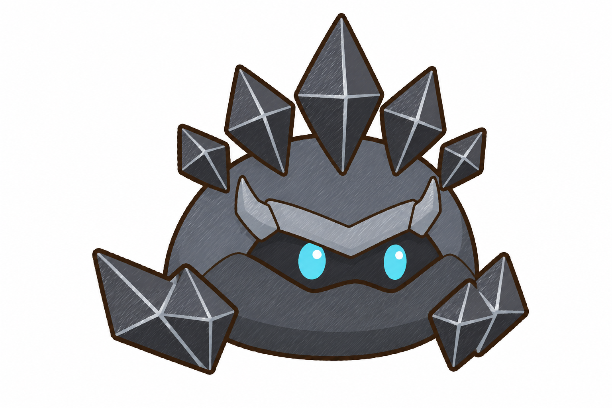
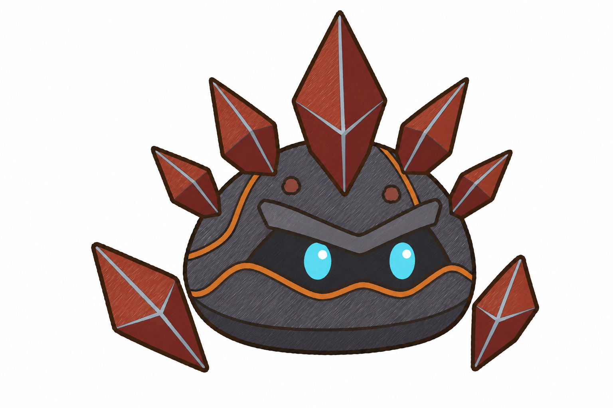
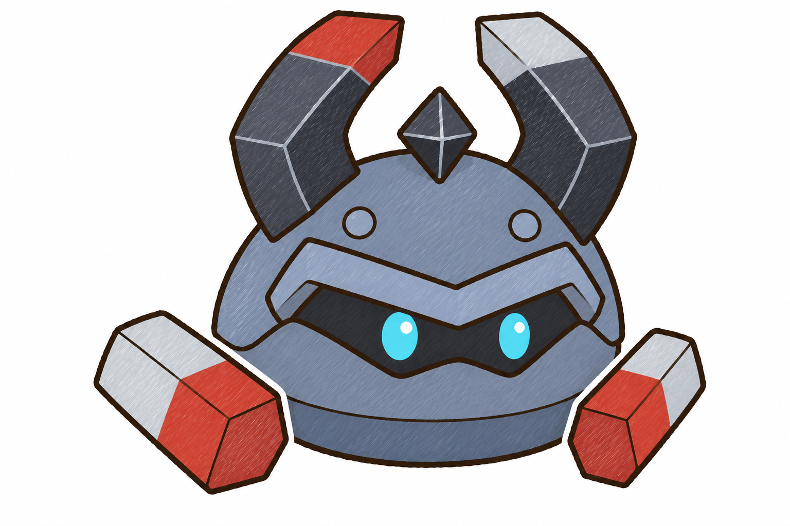

Tinh linh quặng sắt — concept dạng 2 (dạng cuối), cùng rig với dạng 1
 Dạng 1 đã duyệt (để so)
Dạng 1 đã duyệt (để so)

A giáp sắt rèn sẫm, mày giáp thép + hai sừng thép ngắn, vương miện năm gai từ thạch, tay là hai tinh thể ghép như găng

B đá bazan có mạch quặng cam, mày đá, chùm năm gai hematit đỏ gỉ, tay là tinh thể hematit to

C thép xám lam, mày giáp, hai sừng cong thành nam châm móng ngựa (đầu đỏ / bạc), tay là hai khối cực nam châm